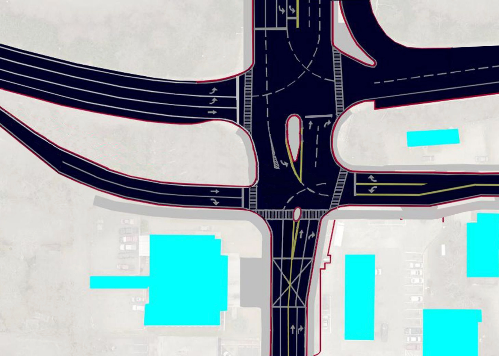
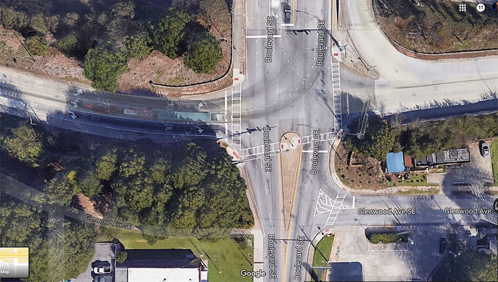

Boulevard/Glenwood Crossing Concept
Reducing Traffic Congestion, Improving East-West Bike Route
Phase 1: Glenwood Ave could be connected to the Boulevard intersection on the north side of the fire station.
A new traffic light could be added to allow for a direct bike and pedestrian crossing at Glenwood Ave.
Access to Boulevard from an eastbound Glenwood Ave would reduce traffic
on Cherokee and Sydney by Dakota Blue. Traffic would also be reduced at the two turns by CVS, which have no traffic lights.

Phase 2: GDOT adds left-turn route from I-20 freeway-exit using oneway streatch of Glenwood Ave. Traffic exiting freeway crosses Boulevard heading east on Glenwood.
1. Allows freeway traffic and neighborhood traffic to continue straight toward Kroger without using neighborhood backstreets by CVS.
2. Reduces vehicle traffic at Beltline crossings on Bill Kennedy Way in Glenwood Park by Kroger.
3. Addition of left turn from westbound Glenwood Avenue to
southbound Boulevard further reduces traffic on neighborhood streets east of Boulevard.
4. Aligns crosswalk with a new protected multiuse bike path on Glenwood Ave from
Boulevard to MHJ High School and the Beltline.

Existing intersection of Boulevard and Glenwood Avenue at I-20 Freeway
Share your input by clicking the
Comment Card link here until February 26, 2021.
Concept Coordinator: Loren Heyns, CAD Design: Justin Lawrence, Multimodal Design: Giang Nguyen.
Freeway Cap Park - 2050
"Cap Park" would provide a green-belt of sports fields north of MegaKroger above a level of covered parking, with condos and storefronts facing north and south. This will allow the high-speed bike path from the Beltline to continue over both Boulevard and Park Ave, with a bike ramp connecting down to Cherokee Ave. A street could connect from the Cherokee bridge to Grant Street and Hill Street with smaller buildings and open sky.